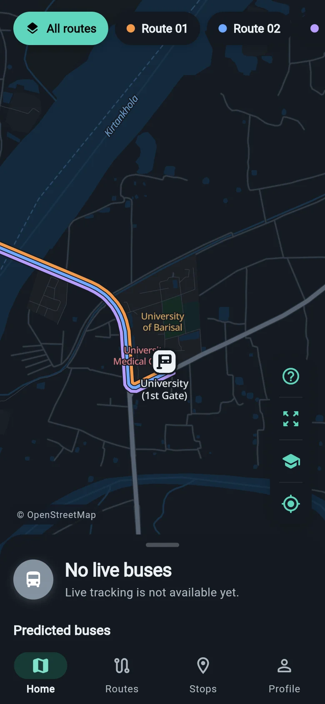
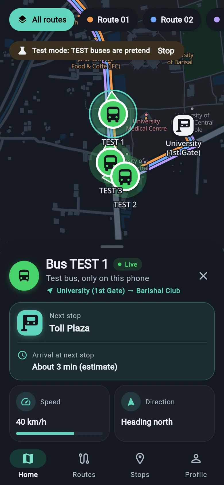
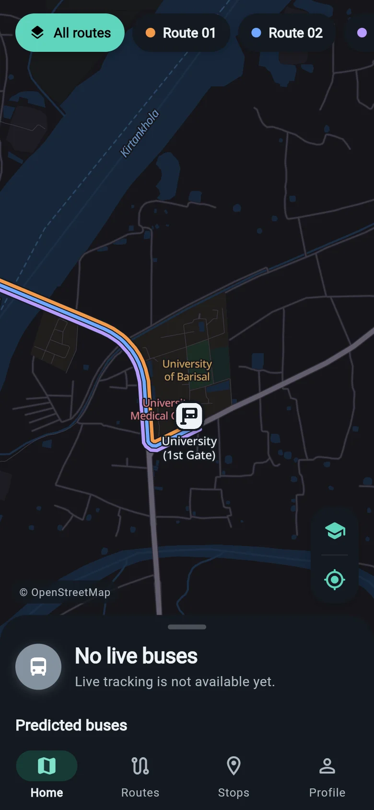
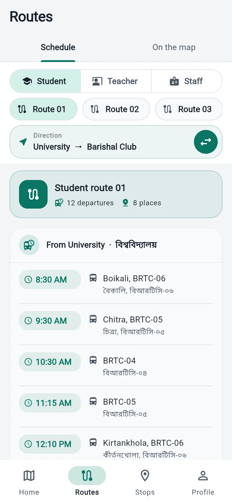
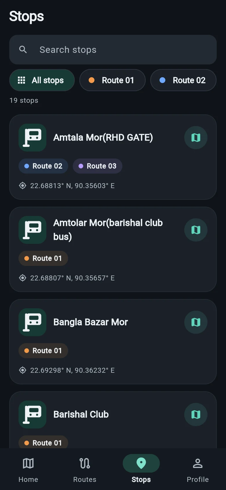
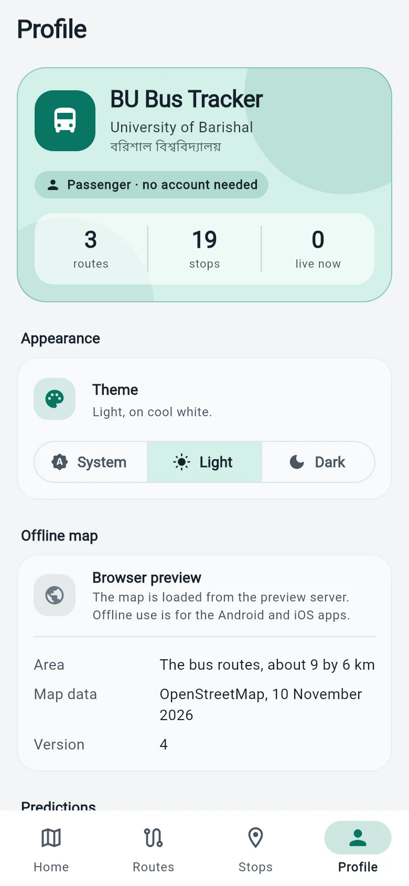
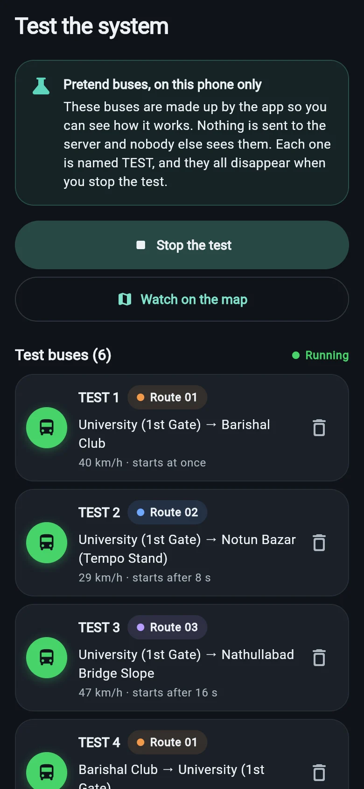
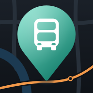

Offline map of Barishal
Streets, buildings, the river and landmarks along the bus routes are stored on your phone. Checked with the phone in airplane mode.
AvailableEarly access · live tracking is in testing
Bus schedules for students, teachers and staff, every stop, and an offline map of Barishal, in one free app. Live bus tracking is being tested now.
বরিশাল বিশ্ববিদ্যালয়ের বাসের সময়সূচি, স্টপেজ আর অফলাইন ম্যাপ, এক অ্যাপে।

Features
Built for the people who ride University of Barishal buses every day, and tested on real phones.
Streets, buildings, the river and landmarks along the bus routes are stored on your phone. Checked with the phone in airplane mode.
AvailableEvery departure for students, teachers and staff, with the buses named for each trip. Switch a route between its two directions with one tap.
AvailableSee where each route runs, search the stops by name or filter them by route, and tap one to see which buses are on their way.
AvailableStop and bus names appear as the university publishes them in Bangla, with English beside them.
AvailableA clean map in the style you know from navigation apps. Tilt it with two fingers to see the buildings rise.
AvailableOpen it and go. Only bus drivers and transport office staff sign in, with their Google account.
AvailableRun pretend buses on your own phone to see tracking at work. Nothing is sent anywhere, nobody else sees them, and each is named TEST.
AvailableOne tap for a key to every marker, for all routes at once, for the university, or for where you are standing.
AvailableBuses glide along their route in real time. Follow one and the map turns to face the way it is going, like a navigation app.
In testingHow many minutes until each bus reaches your stop, which way it is going and how far away it is, measured along the real route.
In testingWhen there is no live position, the app shows where a bus probably is, from the timetable and where it was last seen. Always marked as a prediction.
In testingRoute changes, delays and notices from the transport office, right on the map. Push notifications come later.
In testingHow it works
Live tracking is built and now being tested with real buses. The schedule, stops and map already work today, even offline.
The driver's phone shares the bus's position every few seconds while the trip runs, and stops when it ends.
Positions are accepted only from the driver of that bus's active trip, then sent on to everyone straight away.
The bus glides along its route on your map, with its next stop and an estimate of when it gets there.
Screens
Real screenshots of the current version, not mock-ups. The buses in the first one are the app's own test buses.






Map data © OpenStreetMap contributors.
Roadmap
What is ready today and what comes next. Plans can change as the work goes on.
Ready
In testing
Next
Later
Download
Free for everyone. New versions are published here and on GitHub.
Android 7.0 or newer
Looking for the latest version…
iOS 15.5 or newer
The app is built with Flutter, which also runs on iPhone. The iPhone version still has to be built and tested on a Mac, so it will follow the Android release.
Follow progress on GitHubGoogle Play Protect may show a warning because the app is not from the Play Store yet. Updating works the same way: install the new APK over the old one.
Early-access builds are signed with a development key. When the app moves to its final key, this version will need uninstalling once before the new one installs.
Open source
The source code will be published on GitHub, where you can follow the work, report problems and suggest ideas.
Numbers appear here once the project is on GitHub.
FAQ
Yes. The app is free, has no ads and needs no payment of any kind.
No. Students, teachers and staff can use everything without signing in. Only bus drivers and transport office staff sign in, with their Google account.
Yes. The map, the bus schedule and the stops are stored on your phone, so they work with no connection. Live bus positions, once available, need a connection.
It is built and being tested now, and will be switched on for everyone once it has been tried on real buses. New versions are published on this page and on GitHub.
Yes. Open Profile, tap Test the system, add a set of pretend buses and start them. They run on your phone only, are named TEST, and disappear when you stop the test.
When there is no live position for a bus, the app can show where it probably is, worked out from the timetable or from where the bus was last seen. It has a dashed marker and always says Predicted. The timetable does not say which days it runs, so on a holiday a predicted bus may not really be on the road.
Student routes 01 to 03, teacher routes 04 to 07 and staff routes 04, 05, 06 and 08, taken from the university's official bus schedule.
No. If you allow it, your location is only used to show where you are on your own map, and it is not uploaded. Bus positions come from the driver's phone during a trip.
Early versions are released as an APK on GitHub, which is quicker while the app changes often. A Play Store listing is planned. Download only from this page or the project's GitHub page, and compare the SHA-256 checksum shown here if you want to be sure the file is untouched.
It is planned. The app is built with Flutter, which runs on iPhone too, but the iPhone version still has to be built and tested on a Mac.
হ্যাঁ। অ্যাপটি সম্পূর্ণ বিনামূল্যে, কোনো বিজ্ঞাপন নেই, আর যাত্রীদের কোনো অ্যাকাউন্ট খুলতে হয় না।
হ্যাঁ। ম্যাপ, বাসের সময়সূচি আর স্টপেজগুলো ফোনেই রাখা থাকে, তাই ইন্টারনেট ছাড়াও দেখা যায়।

Download BU Bus Tracker and keep the schedule and the map in your pocket.